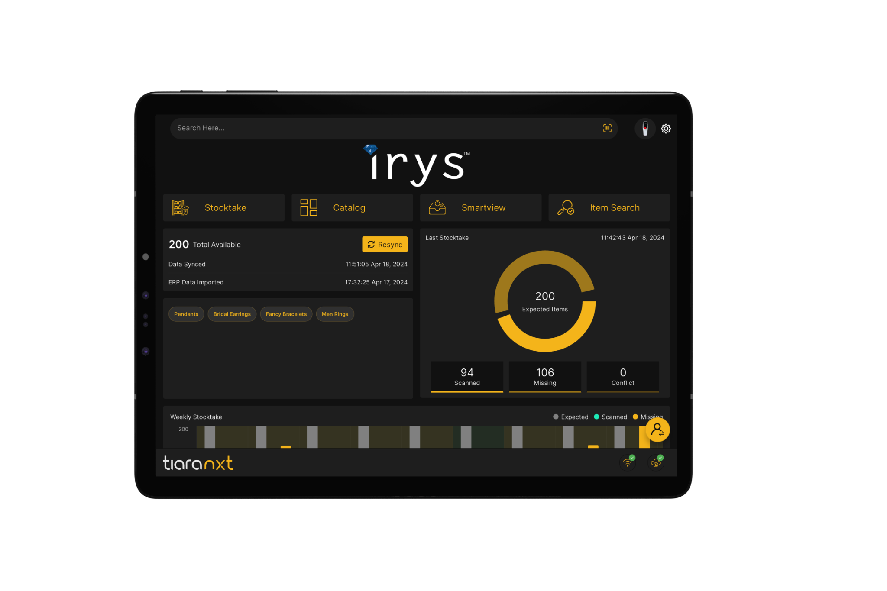
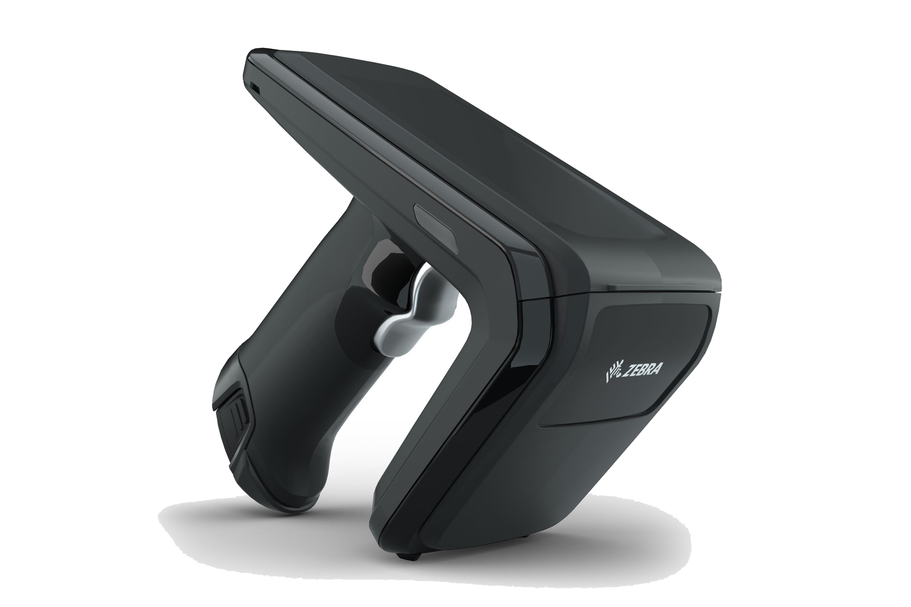
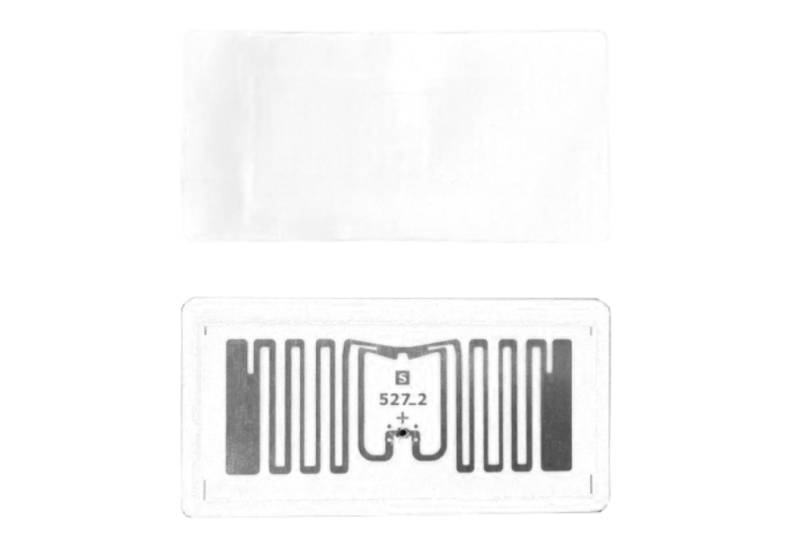

01 · FIXED RFID READER
Surface
RFID reading engineered for controlled jewellery workflows.
RFID and IoT technology created for the precision of jewellery and diamond inventory — connecting stocktaking, search, verification and enterprise workflows in one intelligent ecosystem.



Technology deployed across an international network of jewellery and diamond businesses.


Purpose-built hardware, software and RFID consumables work together to make inventory operations faster, more controlled and easier to connect with existing systems.
 02 · HANDHELD RFID
02 · HANDHELD RFID 03 · PRINT & ENCODE
03 · PRINT & ENCODEIrys technology supports the workflows where visibility matters most — without forcing jewellery businesses into a generic inventory model.
Accelerate daily and periodic inventory checks.
Locate tagged pieces with less manual searching.
Confirm inventory during issue, return and dispatch.
Improve visibility across high-value stock.
Connect RFID operations with enterprise systems.
“We’ve witnessed a remarkable 90% reduction in the time required for daily stocktaking.”Vivek Jain — Managing Director, Navkkar Jewellers
Recent public feedback on Google.
“I highly recommend this company. We had such a great experience with them from start to finish. All my stuff was trained…”
“ممتازين .. حلول ذكية وخدمة ممتازة…”
“Excellent RFID solutions provider in the UAE. Professional team, fast support, and reliable systems. Highly recommended!”
Irys operates across Singapore, India, the UAE, Hong Kong SAR and the United States.